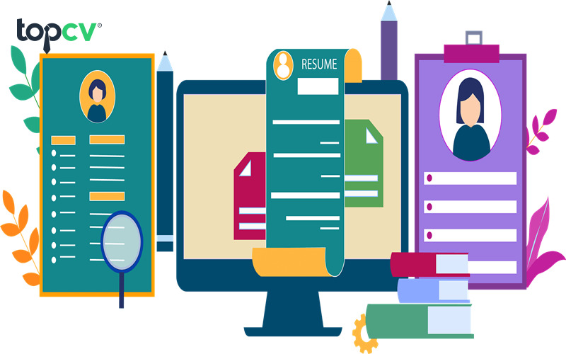
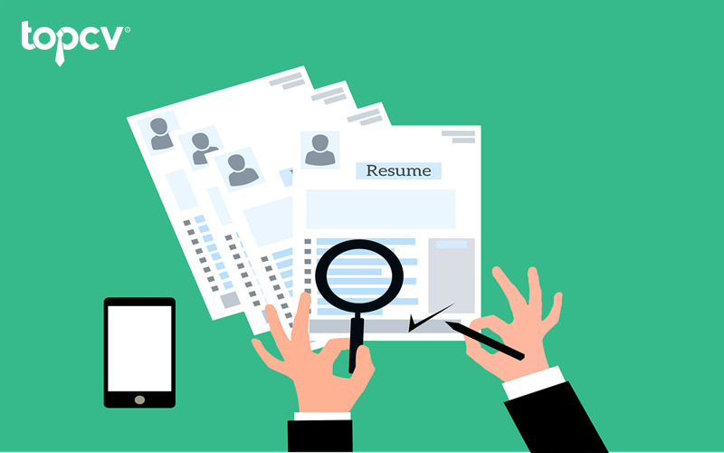

Chú ý đến những kỹ năng mềm phù hợp với doanh nghiệp
Kết luận
Viết kỹ năng trong CV xin việc không khó nhưng bằng cách nào để những kỹ năng đó nổi bật, thu hút nhà tuyển dụng lại rất khó. Khi trình bày các kỹ năng, ứng viên nên lựa chọn những kỹ năng phù hợp với vị trí đang ứng tuyển. Vậy làm thế nào để viết các kỹ năng trong CV hiệu quả? Tham khảo bài viết dưới đây để lựa chọn được cách viết các kỹ năng giúp CV trở nên hoàn hảo hơn.
10 kỹ năng trong CV thu hút nhà tuyển dụng
Để viết được chiếc CV tốt việc đầu tiên ứng viên cần làm là đọc kỹ mô tả công việc của vị trí đang muốn ứng tuyển. Điều này giúp ứng viên hiểu rõ hơn về điều kiện tìm kiếm ứng viên của nhà tuyển dụng, từ đó, lựa chọn những kỹ năng phù hợp nhất cần viết trong CV. Dưới đây là 6 kỹ năng trong CV cần thiết mà bất cứ nhà tuyển dụng nào cũng muốn thấy trên CV của ứng viên.
Kỹ năng giao tiếp
Kỹ năng này là khả năng sử dụng ngôn ngữ nói hoặc ngôn ngữ cơ thể để diễn đạt ý kiến, cảm nhận, suy nghĩ của mỗi cá nhân một cách rõ ràng và thuyết phục. Đồng thời, đây cũng là yếu tố quan trọng kéo dài cuộc nói chuyện 2 chiều.Trong mọi công việc đều cần có kỹ năng này. Có kỹ năng giao tiếp tốt, nhân viên có thể truyền đạt ý kiến, đưa ra suy nghĩ, mong muốn của bản thân với cấp trên, đồng nghiệp hay khách hàng hiệu quả nhất. Giao tiếp tốt sẽ góp phân giúp buổi thảo luận, thuyết trình, trao đổi hay thương thuyết với khách hàng diễn ra suôn sẻ và tỷ lệ thành công cao hơn. Thậm chí còn để lại ấn tượng tốt đối với mọi người. Trong CV, thay vì để trơ trơ dòng chữ “kỹ năng giao tiếp”, ứng viên có thể viết chi tiết hơn như sau: “Kỹ năng giao tiếp tốt, được phát triển và rút kinh nghiệm qua các công việc sale, telesale, v.vv..”

Kỹ năng giao tiếp tốt, nhân viên có thể truyền đạt ý kiến, đưa ra suy nghĩ, mong muốn hiệu quả nhất
Kỹ năng tư duy phản biện
Ngày nay, tư duy phản biện là một kỹ năng được đề cao trong đời sống, đặc biệt là trong trường học, doanh nghiệp. Nhiều người cho rằng tư duy phản biện chính là thích tranh cãi, chỉ trích người khác.
Nhưng không, thực tế tư duy phản biện hoàn toàn khác. Kỹ năng tư duy phản biện giúp người lao động suy nghĩ thấu đáo, có thể quan sát sự việc ở mọi khía cạnh khách quan nhất. Từ đó tạo ra những lập luận đúng đắn và mang tính xây dựng, đem lại kết quả tối ưu cho cuộc tranh luận, cuộc họp hay hội thảo, thuyết trình.
Để gây ấn tượng với nhà tuyển dụng, trong CV ứng viên có thể viết: “Kỹ năng tư duy phản biện được thể hiện qua những công việc tìm hiểu, nghiên cứu về…, quản trị dự án…, phân tích chiến lược Marketing, v.vv..”
Ngoài ra, ứng viên không cần mất quá nhiều thời gian để nghĩ cách trình bày mục kỹ năng trong CV bởi TopCV cung cấp cho người dùng rất nhiều mẫu CV miễn phí, chuyên nghiệp. Đặc biệt, khi đã có tài khoản và CV xin việc tại TopCV.vn, ứng viên có thể nhấn “Đẩy Top” CV và Bật chế độ tìm việc để nhà tuyển dụng dễ dàng nhìn thấy CV.
Tư duy phản biện giúp người lao động suy nghĩ thấu đáo, có thể quan sát sự việc ở khía cạnh khách quan nhất
Kỹ năng giải quyết vấn đề
Đây là một trong những kỹ năng mềm vô cùng quan trọng và không thể thiếu trong cuộc sống. Có thể hiểu, kỹ năng giải quyết vấn đề là khả năng phân tích, đánh giá và đưa ra quyết định xử lý tối ưu nhất trước mọi tình huống trong đời sống. Nhờ khả năng nhanh nhạy, giải quyết vấn đề nhiều hướng khác nhau, bạn sẽ làm chủ được những vấn đề phát sinh.
Đối với những người chưa có nhiều kinh nghiệm, việc đưa ra các hoạt động mà ứng dụng kỹ năng này để vượt qua sẽ tạo ấn tượng tốt đối với nhà tuyển dụng. Chính vì vậy, đừng quên thể hiện kỹ năng này trong CV xin việc nhé!
Kỹ năng giải quyết vấn đề giúp bạn làm chủ được những vấn đề phát sinh
Kỹ năng làm việc nhóm
Kỹ năng làm việc nhóm là khả năng thiết lập và duy trì hợp tác với các thành viên trong nhóm để hoàn thành công việc chung. Sở hữu kỹ năng này, ứng viên có cơ hội phát triển cá nhân, tích lũy thêm được nhiều kiến thức, kinh nghiệm từ đồng nghiệp hay những người làm chung nhóm, dự án.
Ngoài ra, làm việc nhóm hiệu quả còn mang lại những giá trị về vật chất và tinh thần cho tập thể và cá nhân. Để làm việc nhóm đạt hiệu quả cao cần tuân thủ 8 kỹ năng nhỏ sau:
Lắng nghe ý kiến, góp ý của người khác.
Khả năng tổ chức, phân công công việc đồng đều, phù hợp với khả năng của các thành viên trong nhóm.
Có khả năng thuyết phục, trình bày để đưa ra phương pháp tốt nhất giải quyết vấn đề được các thành viên đồng tình.
Tôn trọng ý kiến và luôn giúp đỡ các thành viên trong nhóm.
Luôn có trách nhiệm với công việc được giao.
Không trễ giờ để các thành viên phải đợi mội lần họp, thảo luận.
Không phủ nhận nỗ lực của người khác, luôn khen ngợi, khích lệ đồng nghiệp.
Chấp nhận lời chỉ trích, phản hồi từ các thành viên khác.
Kỹ năng thích nghi
Đây là một trong những kỹ năng mềm ai cũng cần có, thể hiện khả năng thích ứng tốt trước mọi sự thay đổi của hoàn cảnh. Hiện nay, đa số các nhà tuyển dụng đều đề cao những ứng viên có khả năng thích nghi tốt và chịu được áp lực trong công việc.
Khi ứng viên thích nghi tốt, ở trong bất cứ môi trường nào sẽ dễ dàng hòa nhập và vẫn có thể làm tốt nhiệm vụ. Với những công việc có môi trường làm việc áp lực, ứng viên nên thêm kỹ năng này vào trong CV của mình.
Kỹ năng thích nghi giúp ứng viên có thể dễ dàng hòa nhập và làm tốt nhiệm vụ.
Kỹ năng lãnh đạo
Kỹ năng lãnh đạo là khả năng tổ chức, sắp xếp và phân chia công việc phù hợp với khả năng của từng nhân sự để đạt mục tiêu chung. Dù ở vị trí quản lý hay lãnh đạo một dự án nhỏ, kỹ năng lãnh đạo vẫn luôn quan trọng. Người lãnh đạo giỏi cần phải quyết đoán, chính trực, công bằng, nhạy bén giải quyết vấn đề, thiết lập được mối quan hệ giữa các thành viên, có khả năng giảng dạy và sẵn sàng chấp nhận rủi ro (nếu có).
Hiện nay, trong hầu hết các doanh nghiệp đều đề cao vấn đề hỗ trợ xây dựng các đội, nhóm mạnh và đảm bảo công việc diễn ra suôn sẻ, đạt kết quả cao. Chính vì thế, một ứng viên có kỹ năng lãnh đạo sẽ ghi điểm rất lớn trong mắt nhà tuyển dụng và khả năng được lựa chọn rất cao.
Kỹ năng lãnh đạo là khả năng tổ chức, sắp xếp và phân chia công việc phù hợp với khả năng nhân sự để đạt mục tiêu chung
Kỹ năng lắng nghe chủ động
Kỹ năng lắng nghe chủ động là khả năng tập trung hoàn toàn vào người mà bạn đang trò chuyện. Điều này bao gồm không chỉ việc nghe các từ ngữ mà người đó nói, mà còn cả việc nắm bắt cảm xúc, biểu hiện khuôn mặt và ngôn ngữ cơ thể của họ. Khi lắng nghe chủ động, bạn thể hiện sự quan tâm và tôn trọng đối tác của mình, và bạn cố gắng thấu hiểu sâu sắc hơn về thông điệp thực sự mà họ đang truyền đạt.
Kỹ năng lắng nghe chủ động đóng vai trò quan trọng trong công việc bởi:
Nắm bắt rõ thông tin: Lắng nghe chủ động giúp bạn nắm bắt thông tin chính và hiểu rõ hơn về dự án, nhiệm vụ hay vấn đề được thảo luận.
Tương tác tốt hơn: Khả năng này tạo cơ hội tương tác tích cực với đồng nghiệp và cấp trên, xây dựng sự tin tưởng và quan hệ tốt hơn.
Tạo lòng tin: Lắng nghe chủ động thể hiện sự quan tâm và tôn trọng đối tác, góp phần tạo nên sự tin tưởng và cam kết trong môi trường làm việc.
Xây dựng mối quan hệ mạnh mẽ: Kỹ năng này cung cấp cơ hội để trao đổi ý kiến, tạo ra sự hiểu biết sâu hơn và thúc đẩy tương tác xây dựng.
Cải thiện làm việc nhóm: Lắng nghe chủ động giúp bạn thấu hiểu quan điểm và góc nhìn của đồng đội, từ đó tối ưu hóa quá trình làm việc nhóm.
Phát triển cá nhân: Khả năng lắng nghe chủ động giúp bạn học hỏi từ người khác, nâng cao kiến thức và kỹ năng của bản thân.
Giải quyết vấn đề tốt hơn: Việc hiểu rõ góc nhìn của người khác có thể giúp bạn tìm ra giải pháp tốt hơn cho các thách thức và vấn đề.
Đa số các công việc hiện nay đều yêu cầu cao sự phối hợp và khả năng làm việc nhóm giữa các thành viên. Vậy nên làm nổi bật kỹ năng lắng nghe chủ động sẽ giúp bạn tạo được ấn tượng tốt với nhà tuyển dụng.
Kỹ năng tin học văn phòng
Kỹ năng tin học văn phòng đề cập đến khả năng sử dụng hiệu quả các công cụ và phần mềm văn phòng trong môi trường làm việc. Đây là một kỹ năng quan trọng bởi nó liên quan đến xử lý thông tin, tạo tài liệu và tương tác trong môi trường kỹ thuật số. Trong bối cảnh công nghệ số phát triển, kỹ năng tin học văn phòng được các nhà tuyển dụng rất chú trọng
Kỹ năng quản lý thời gian
Kỹ năng quản lý thời gian là khả năng hiệu quả hóa việc sắp xếp và phân chia thời gian để hoàn thành các nhiệm vụ và mục tiêu. Nó đóng vai trò quan trọng trong việc duy trì hiệu suất và sự tổ chức trong công việc hàng ngày.
Nhà tuyển dụng thường đánh giá cao những ứng viên có kỹ năng quản lý thời gian bởi:
Tăng hiệu suất: Kỹ năng quản lý thời gian giúp bạn làm việc hiệu quả hơn, tối ưu hóa thời gian và tập trung vào những nhiệm vụ quan trọng nhất.
Đạt được mục tiêu: Việc phân chia thời gian một cách hợp lý giúp bạn hoàn thành các mục tiêu cá nhân và chuyên môn một cách hiệu quả hơn.
Giảm căng thẳng: Quản lý thời gian cẩn thận giúp giảm bớt áp lực và căng thẳng do việc đối mặt với những kế hoạch không thể thực hiện.
Tạo sự cân bằng: Kỹ năng này giúp bạn cân bằng giữa công việc và cuộc sống cá nhân, từ đó cải thiện chất lượng cuộc sống tổng thể.
Ưu tiên công việc: Quản lý thời gian giúp bạn xác định và ưu tiên các nhiệm vụ quan trọng, từ đó đảm bảo rằng bạn sử dụng thời gian một cách hiệu quả.
Tăng sự tự chủ: Khả năng tự quản lý thời gian giúp bạn thể hiện sự tự chủ và sự sắp xếp cá nhân, từ đó tạo ra sự tự tin trong công việc và cuộc sống.
Kỹ năng quản lý thời gian là khả năng hiệu quả hóa việc sắp xếp và phân chia thời gian để hoàn thành các nhiệm vụ và mục tiêu
Kỹ năng chuyển đổi
Kỹ năng chuyển đổi (Transferable skills) là những kỹ năng mà bạn có thể áp dụng và chuyển từ một lĩnh vực hoặc tình huống vào lĩnh vực hoặc tình huống khác. Những kỹ năng này không chỉ hữu ích trong môi trường làm việc hiện tại, mà còn mang lại nhiều giá trị trong các tình huống và ngữ cảnh khác nhau.
Dưới đây là một số ví dụ về các kỹ năng chuyển đổi phổ biến:
Kỹ năng giao tiếp: Khả năng diễn đạt ý kiến một cách rõ ràng và hiệu quả, cả trong viết và nói.
Kỹ năng làm việc nhóm: Khả năng làm việc cùng đồng nghiệp khác nhau, chia sẻ ý kiến, hỗ trợ và đóng góp vào mục tiêu chung.
Kỹ năng quản lý thời gian: Khả năng phân chia và sắp xếp thời gian để hoàn thành nhiệm vụ và dự án.
Kỹ năng giải quyết vấn đề: Khả năng phân tích tình huống, tìm kiếm giải pháp và ra quyết định đúng đắn.
Kỹ năng tự quản lý: Khả năng tự chủ trong việc lập kế hoạch, đặt ra mục tiêu và thực hiện chúng một cách độc lập.
Kỹ năng tư duy sáng tạo: Khả năng tạo ra ý tưởng mới và cách tiếp cận độc đáo đối với các vấn đề.
Kỹ năng xử lý thông tin: Khả năng thu thập, xử lý và phân tích thông tin một cách hiệu quả.
Kỹ năng quản lý dự án: Khả năng lập kế hoạch, tổ chức và điều hành các dự án từ đầu đến cuối.
Kỹ năng lãnh đạo: Khả năng hướng dẫn và động viên đồng nghiệp, đưa ra quyết định và tạo định hướng cho nhóm.
Kỹ năng tương tác xã hội: Khả năng tạo mối quan hệ, xây dựng mạng lưới và tương tác một cách hiệu quả với người khác.
Kỹ năng phân tích số liệu: Khả năng hiểu và phân tích dữ liệu số để đưa ra những thông tin quan trọng.
Kỹ năng sử dụng công cụ kỹ thuật số: Khả năng làm việc với các công cụ và phần mềm kỹ thuật số để xử lý thông tin và tạo tài liệu.
Kỹ năng giảng dạy và hướng dẫn: Khả năng truyền đạt kiến thức và kỹ năng cho người khác.
Kỹ năng phân tích kỹ thuật: Khả năng phân tích chi tiết kỹ thuật và hiểu về cách hoạt động của các hệ thống.
Cách viết kỹ năng trong CV
Ứng viên có nhiều kỹ năng hữu ích trong công việc sẽ dễ ghi điểm trong mắt nhà tuyển dụng nhưng phải biết cách trình để thực sự gây ấn tượng so với các ứng viên khác. Tuy nhiên, nếu những thông tin được ghi trong CV không thực sự đúng thì ứng viên sẽ gặp rắc rối khi được nhận vào làm. Một danh sách các kỹ năng trong CV chất lượng phải vừa chân thực, làm toát lên điểm mạnh của ứng viên, vừa đánh đúng tâm lý của nhà tuyển dụng.
Việc đưa các kỹ năng vào trong CV xin việc không hề khó nhưng làm cách nào để những kỹ năng đó thực sự nổi bật, thu hút nhà tuyển dụng mới khó. Ứng viên nên liệt kê các kỹ năng liên quan trực tiếp đến vị trí ứng tuyển, tránh sa đà vào những kỹ năng không cần thiết. Thông thường, những ứng viên có kỹ năng mà nhà tuyển dụng mong đợi sẽ có tỷ lệ được lựa chọn cao hơn.

Các kỹ năng trong CV càng phù hợp càng gây ấn tượng với nhà tuyển dụng
Về cách trình bày, mục kỹ năng thường viết sau phần kiến thức chuyên môn và kinh nghiệm làm việc của ứng viên. Sau khi nắm thông tin về năng lực của ứng viên, nhà tuyển dụng sẽ tiếp tục để ý đến kỹ năng. Nếu ứng viên thể hiện được những điểm nổi bật của mình về các ký năng phù hợp với vị trí nhà tuyển dụng đang tìm thì CV đó chắc chắn sẽ có điểm cộng. Mục kỹ năng của CV xin việc thường được trình bày dưới 2 dạng là dạng trình bày kỹ năng và dạng đánh giá theo thang điểm.
Đối với dạng trình bày kỹ năng, ứng viên nên dùng gạch đầu dòng để kiệt kê. Đồng thời, đưa những kỹ năng nổi bật, liên quan đến vị trí ứng tuyển lên đầu và nên nêu chi tiết, cụ thể. Ví dụ: kỹ năng làm việc teamwork trong công việc, kỹ năng giao tiếp được tích lũy từ công việc làm sale, v.vv..
Đối với dạng đánh giá theo thang điểm, ứng viên có thể tự đánh giá khả năng của mình trên thang điểm 10 hoặc 100. Tuy nhiên, cách thức này không chi tiết bằng dạng trình bày, nhà tuyển dụng không nắm rõ được mức độ kỹ năng của ứng viên.
Những lưu ý khi viết các kỹ năng trong CV
Để viết các kỹ năng trong CV gây ấn tượng đối với nhà tuyển dụng, ứng viên cần lưu ý một vài vấn đề sau:
Các kỹ năng phải phù hợp
Thay vì lan man, sa đà vào những kỹ năng vô bổ, ứng viên cần trình bày những kỹ năng phù hợp với mô tả của vị trí đang ứng tuyển. Vì vậy, ứng viên nên đọc kỹ mô tả công việc để xác định những kỹ năng cứng và kỹ năng mềm phù hợp để liệt kê trong CV. Kỹ năng càng phù hợp, CV sẽ càng tạo ấn tượng nổi bật.
Phân loại khi trình bày các kỹ năng trong CV
Kỹ năng trong CV bao gồm tất các kỹ năng ứng viên sở hữu, phù hợp với yêu cầu của vị trí đang ứng tuyển. Ứng viên nên chọn lọc, trình bày các kỹ năng tương thích với công việc nhất, càng phù hợp, tỷ lệ được chọn càng cao. Bên cạnh đó, khi viết các kỹ năng trong CV, ứng viên cần hiểu được thế nào là kỹ năng cứng/mềm và kỹ năng chuyên môn, tổng hợp.
Kỹ năng cứng và kỹ năng mềm
Trong bộ kỹ năng bao gồm cả kỹ năng cứng và kỹ năng mềm. Kỹ năng cứng là những kiến thức và kỹ năng chuyên môn được học trong trường học hoặc trong các khóa đào tạo. Kỹ năng này chủ yếu về kỹ thuật, được đúc kết và rút kinh nghiệm qua việc thực hành. Các kỹ năng cứng phổ biến có thể kể đến như: Kỹ năng ngoại ngữ, kỹ năng tin học, kỹ năng vận hành máy móc,....Kỹ năng này là nội dung cần thiết trong CV để nhà tuyển dụng dễ dàng đánh giá kỹ năng thực hành của ứng viên.
Khác với kỹ năng cứng, kỹ năng mềm là những kỹ năng bản thân tự đúc kết và phát triển để hoàn thiện hơn. Kỹ năng này quyết định lớn đến sự thành công của mỗi người. Các kỹ năng mềm phổ biến gồm: kỹ năng giao tiếp, kỹ năng thuyết trình, kỹ năng làm việc nhóm, kỹ năng quản lý, kỹ năng tư duy, v.vv..
Ứng viên nên chọn lọc, trình bày các kỹ năng tương thích với công việc nhất
Kỹ năng chuyên môn và kỹ năng tổng hợp
Kỹ năng chuyên môn là những kiến thức học thuật của mỗi lĩnh vực/ngành nghề khác nhau, được đào tạo bài bản trong quá trình học tập tại trường lớp. Kỹ năng này không tự nhiên có mà phải được trau dồi liên tục một thời gian dài. Ngoài học tập, ứng viên có thể tích lũy kỹ năng này nhờ vào kinh nghiệm thực tế trong những công việc đã trải qua.
Kỹ năng tổng hợp được rèn giũa trong môi trường cụ thể nhưng vận dụng trong nhiều môi trường, hoàn cảnh khác nhau. Trong hầu hết các công việc, người lao động đều phải sử dụng đến kỹ năng này.
Chú ý đến những kỹ năng mềm phù hợp với doanh nghiệp
Bên cạnh đánh giá năng lực ứng viên, nhà tuyển dụng còn chú trọng đến việc tìm kiếm những ứng viên phù hợp với văn hóa công ty, nhanh chóng thích nghi với môi trường làm việc mới. Nhiều nhà tuyển dụng cho rằng ứng viên dễ hòa nhập, hợp tác với đồng nghiệp thì khả năng làm việc hiệu quả hơn. Vì thế, ngoài kiến thức chuyên môn, nhà tuyển dụng còn đánh giá ứng viên dựa trên các kỹ năng mềm.
Kết luận
Trong thời đại công nghệ 4.0 lên ngôi, việc trang bị cho mình một chiếc CV online vô cùng quan trọng. Hi vọng những thông tin về kỹ năng trong CV ở trên sẽ giúp ứng viên tự tin xây dựng chiếc CV thật chất, gây ấn tượng với nhà tuyển dụng.